00读前一分钟 · 全文脉络（做完题再看也行）
①段 问题：Airbnb 兴起以后，新英格兰各地一直想管住短租；如今房价创历史新高、房源存量跌到历史低位，监管更急了——尤其怕开发商成片买房、转手做短租大赚一笔（26 题）。
②段 一个州的例子：新罕布什尔出租房空置率跌破 1%，住房倡导者担心放任短租会让本就紧张的市场雪上加霜。州议会刚刚否决了一项议案——那项议案本想禁止城镇出台限制短租的法规（27 题：议案要的是放开，议会没让它通过）。
③④段 两种声音：Taylor（劳工住房联盟）——出租房供给到了危机水平，雇主招不到人、工人找不到住处；However，Castle（地产经纪人协会 CEO）——短租给游客住，游客撑起旅游业，旅游业养活工人，是个循环（28 题）。
⑤段 专家定性：Horn——短租本身不是症结，个人把闲置的第二套房拿来出租无可厚非；however，开发商盖大规模短租设施（实为酒店）来绕开税收和监管，才是问题 ⟹ 该按酒店征税、监管（29 题）。
⑥⑦段 办法与评价：马萨诸塞州 2018 年底立法，要求房东登记、投保，并可在州税之外加征地方税；波士顿管得更严。Horn 的评价：登记对困境中的城镇有帮助，但要真正改变住房市场，根本办法是多建房（30 题）。
📌 一句话主旨：住房紧缺之下，短租该不该管？——个人短租无妨，开发商借短租之名开酒店才要管；而登记一类监管只能治标，治本靠多建房。
📌 结构套路：问题 → 一州之例 → 正反两人 → 专家定性 → 对策＋评价。五道题顺序出题：26①、27②、28③④、29⑤、30⑦（⑥段是 30 题干扰项的原料）。
📌 与同卷 T1 同一副骨架：T1 是 Hardy 对 Quinn、再请出专家 Branch；本篇是 Taylor 对 Castle、再请出专家 Horn。两篇的人物题都考「谁说的」——T1 22A 把 Hardy 的话安到 Quinn 头上，本篇 28A 把 Castle 的话安到 Taylor 头上。
📌 结构套路：问题 → 一州之例 → 正反两人 → 专家定性 → 对策＋评价。五道题顺序出题：26①、27②、28③④、29⑤、30⑦（⑥段是 30 题干扰项的原料）。
📌 与同卷 T1 同一副骨架：T1 是 Hardy 对 Quinn、再请出专家 Branch；本篇是 Taylor 对 Castle、再请出专家 Horn。两篇的人物题都考「谁说的」——T1 22A 把 Hardy 的话安到 Quinn 头上，本篇 28A 把 Castle 的话安到 Taylor 头上。
01原文精读
🟡 黄色高亮 = 重难点词/短语，点击右侧出卡片 ｜ 蓝色虚线 = 长难句，点击跳到精析 ｜ 每段「意」= 段落意译 ｜ 选中任意其他单词浮出「查有道」 ｜ 原文由你的浏览器从原卷识别成文字（首次约 3 秒，之后秒开）；「原卷对照」可逐句看扫描原图、改识别错字
①
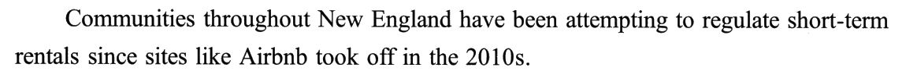
🟡 regulate · short-term · took off
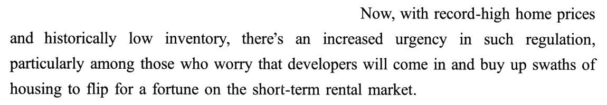
🟡 record-high · inventory · urgency · regulation · swaths of · flip for a fortune
①段意：自从 Airbnb 一类网站在 2010 年代火起来，新英格兰各地的社区就一直想管住短租。如今房价创下历史新高、房源存量处在历史低位，管短租就更急了——尤其在那些担心开发商会涌进来、成片买下住房、转手投进短租市场大赚一笔的人看来。
②
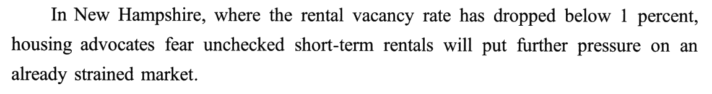
🟡 vacancy rate · advocates · unchecked · strained
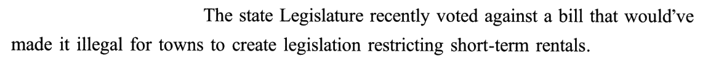
🟡 Legislature · voted against · legislation · restricting
②段意：新罕布什尔州的出租房空置率已跌破 1%，为住房问题奔走的人担心，放任短租会让本已紧张的市场压力更大。该州议会最近投票否决了一项议案——按那项议案，城镇出台限制短租的法规将属违法。
③
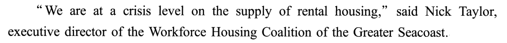
🟡 crisis level · executive director · Coalition
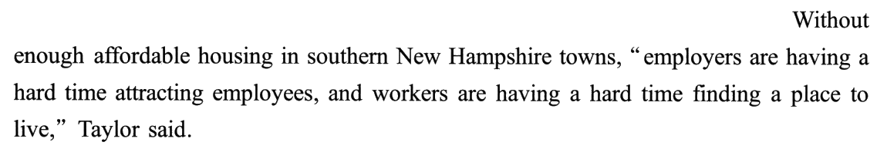
🟡 affordable housing · having a hard time
③段意：「出租房的供给已经到了危机的地步。」大海岸地区劳工住房联盟的执行主任尼克·泰勒说。新罕布什尔南部的城镇缺少负担得起的住房，泰勒说：「雇主很难招到员工，工人也很难找到住处。」
④
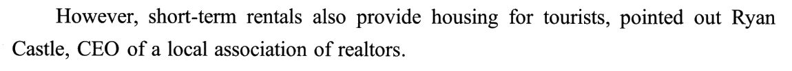
🟡 pointed out · realtors
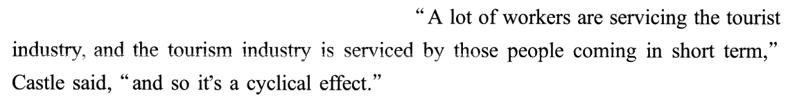
🟡 servicing · serviced · cyclical effect
④段意：不过，当地一家房地产经纪人协会的首席执行官瑞恩·卡斯尔指出，短租也给游客提供了住处。「很多工人在为旅游业干活，而旅游业又靠那些来短住的人撑着，」卡斯尔说，「所以这是个循环。」
⑤
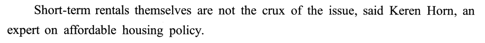
🟡 crux of the issue · affordable
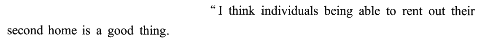
🟡 rent out
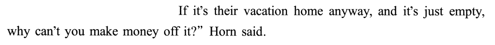
🟡 vacation home · make money off
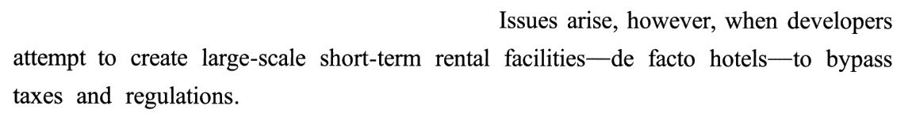
🟡 arise · large-scale · facilities · facto hotels · bypass
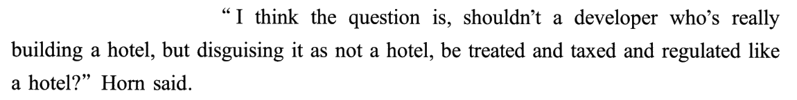
🟡 disguising · taxed · regulated
⑤段意：可负担住房政策专家克伦·霍恩说，短租本身并不是问题的症结。「我觉得个人能把自己的第二套房租出去是好事。反正那是他们的度假屋，空着也是空着，为什么不能拿来赚点钱呢？」霍恩说。可是，当开发商试图修建大规模的短租设施——实际上就是酒店——来绕开税收和监管时，问题就来了。「我觉得问题在于：一个开发商明明在盖酒店，却把它伪装成不是酒店，难道不该像对待酒店那样对待它、向它征税、对它监管吗？」霍恩说。
⑥
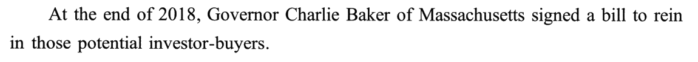
🟡 Governor · rein in · investor-buyers
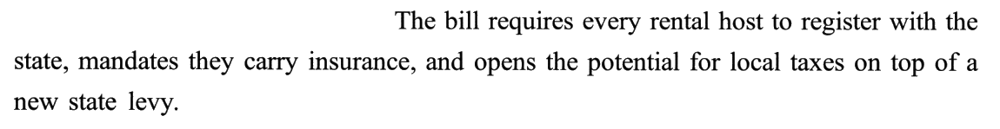
🟡 register · mandates · insurance · on top of · levy
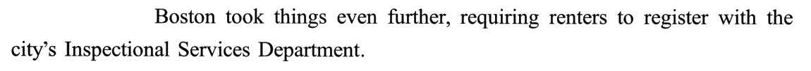
🟡 renters
⑥段意：2018 年底，马萨诸塞州州长查理·贝克签署了一项法案，要约束那些潜在的投资型买家。法案要求每一位出租房东都到州里登记，规定他们必须投保，还为在新开征的州税之外再加征地方税开了口子。波士顿走得更远，要求出租人到市检查服务局登记。
⑦
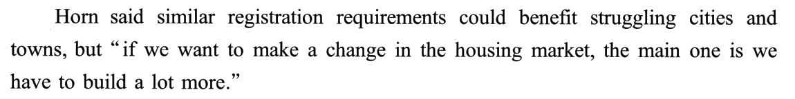
🟡 requirements · struggling
⑦段意：霍恩说，类似的登记要求能让处境艰难的城镇受益，但「如果我们想让住房市场真正有所改变，最主要的一条是：必须多建房，建很多房。」
02题目与解析（点选项即判 · 再看解析）
首段事实26. Which of the following is true of New England?
[A] Its housing supply is at a very low level.
[B] Its communities are in need of funding.
[C] Its rental vacancy rate is going up slowly.
[D] Its home prices are under strict control.
答案 A 题干只给 New England ⟹ 首段。①❷ 交代背景：record-high home prices and historically low inventory——inventory 在房地产语境里是市面上可买可租的房源，historically low 即「历史低位」⟹ A「住房供给处于很低水平」是同义改写。
干扰项：B 由 urgency（紧迫）、flip for a fortune（大赚一笔）联想出「社区缺钱」——急的是监管，不是资金。C 方向反：②❶ 新罕布什尔（新英格兰的一个州）空置率跌破 1%，不是上升。D 两处错：房价是 record-high，谈不上受控；且偷换了监管对象——①段要管的是短租（①❷ such regulation 回指①❶ regulate short-term rentals），不是房价。
技巧：首段事实题先抓首段主旨（「各地急着管短租」），再逐项比对。不认识 inventory 也能做：B、C、D 都能凭原文排除；再拿②段的例子反推——空置率不到 1%、市场 already strained ⟹ 房源少，A 成立。
干扰项：B 由 urgency（紧迫）、flip for a fortune（大赚一笔）联想出「社区缺钱」——急的是监管，不是资金。C 方向反：②❶ 新罕布什尔（新英格兰的一个州）空置率跌破 1%，不是上升。D 两处错：房价是 record-high，谈不上受控；且偷换了监管对象——①段要管的是短租（①❷ such regulation 回指①❶ regulate short-term rentals），不是房价。
技巧：首段事实题先抓首段主旨（「各地急着管短租」），再逐项比对。不认识 inventory 也能做：B、C、D 都能凭原文排除；再拿②段的例子反推——空置率不到 1%、市场 already strained ⟹ 房源少，A 成立。
议案目的27. The bill mentioned in Paragraph 2 was intended to ______.
[A] curb short-term rental speculation.
[B] ensure the supply of cheap housing.
[C] punish illegal dealings in housing.
[D] allow a free short-term rental market.
答案 D ②❷ 一句两个主体：议会 voted against（否决）——这是议会的态度；议案本身的内容在 that 从句里：made it illegal for towns to create legislation restricting short-term rentals。拆开是两层否定：「出台限制短租的法规」被定为「违法」⟹ 不许限制 ＝ 放开短租（D）。
干扰项：A 只看到 restricting 一个否定，漏了 made it illegal 那一层，方向整个反了；何况遏制投机的是⑥段马萨诸塞的法案。B 原料在③❶ Taylor 说的 supply of rental housing——别段、别人的话，议案根本没谈供给。C 借了 illegal 一词捏造「惩罚非法住房交易」——被定为违法的是城镇的立法行为，不是房屋买卖。
技巧：题干问 the bill，就把 The state Legislature voted against 先拿开，只读 a bill that … 的从句；从句里有几个否定就数几个，负负得正。顺手核一下上下文：议会否决了「禁止限制短租」的议案 ⟹ 城镇仍可以限制短租——正好接①段「各地都想管短租」，逻辑通。
干扰项：A 只看到 restricting 一个否定，漏了 made it illegal 那一层，方向整个反了；何况遏制投机的是⑥段马萨诸塞的法案。B 原料在③❶ Taylor 说的 supply of rental housing——别段、别人的话，议案根本没谈供给。C 借了 illegal 一词捏造「惩罚非法住房交易」——被定为违法的是城镇的立法行为，不是房屋买卖。
技巧：题干问 the bill，就把 The state Legislature voted against 先拿开，只读 a bill that … 的从句；从句里有几个否定就数几个，负负得正。顺手核一下上下文：议会否决了「禁止限制短租」的议案 ⟹ 城镇仍可以限制短租——正好接①段「各地都想管短租」，逻辑通。
两人对比28. Compared with Castle, Taylor is more likely to support ______.
[A] further investment in local tourism.
[B] an increase in affordable housing.
[C] strict management of real estate agents.
[D] a favorable policy for short-term workers.
答案 B 先看身份：Taylor 是劳工住房联盟的执行主任，Castle 是地产经纪人协会的 CEO——一个替工人的住处说话，一个替房产生意说话。再看话：③段 Taylor 说出租房供给到了 crisis level，Without enough affordable housing 雇主招不到人、工人找不到住处；④段以 However 转折，Castle 说短租给游客住、带动旅游业、养活工人，是 cyclical effect。两人对立 ⟹ Taylor 要的是更多负担得起的住房（B，affordable housing 原词复现）。
干扰项：A 是 Castle 的思路（短租→旅游业），被安到了 Taylor 头上——人物—观点错配（与同卷 T1 22A 同一招）。C「严管地产经纪人」是把 Taylor 的不满和 Castle 的身份硬拼在一起，文中没有。D 两人都提到「对工人有好处」，那是共同点，题干问的是 Compared with Castle 的不同点；况且④❷ coming in short term 说的是来短住的游客，不是「短期工」。
技巧：两人对比题三步——① 用身份推站位；② 找两段之间的转折词（However）确认对立；③ 选项里原词复现、又只属于一方的那个就是答案。
干扰项：A 是 Castle 的思路（短租→旅游业），被安到了 Taylor 头上——人物—观点错配（与同卷 T1 22A 同一招）。C「严管地产经纪人」是把 Taylor 的不满和 Castle 的身份硬拼在一起，文中没有。D 两人都提到「对工人有好处」，那是共同点，题干问的是 Compared with Castle 的不同点；况且④❷ coming in short term 说的是来短住的游客，不是「短期工」。
技巧：两人对比题三步——① 用身份推站位；② 找两段之间的转折词（However）确认对立；③ 选项里原词复现、又只属于一方的那个就是答案。
人物观点29. What does Horn emphasize in Paragraph 5?
[A] The urgency to upgrade short-term rental facilities.
[B] The efficient operation of the local housing market.
[C] The necessity to stop developers from evading taxes.
[D] The proper procedures for renting out spare houses.
答案 C ⑤段是一个完整的「让步—转折」：❶–❸ 让步——短租本身不是症结，个人出租第二套房是好事；❹ however 转折——开发商建大规模短租设施（de facto hotels）是为了 bypass taxes and regulations；❺ 用反问加重：明明在盖酒店，难道不该按酒店征税、监管？反问＝强烈主张 ⟹ 要阻止开发商借短租逃税（C；bypass ≈ evade）。
干扰项：A 照搬 facilities、又由 large-scale 联想出「升级」——开发商建这些设施是为了逃税，Horn 没说要升级。B 把⑤❸「度假屋空着也是空着」扭成「市场高效运转」，Horn 讲的是个人出租的合理性，不是市场效率。D 照搬 rent out，但 Horn 只说这是好事，没提任何出租流程。
技巧：「强调」题找段内的转折与反问。本段 however 插在句中，容易读漏——前三句都在铺垫，越往前的选项（B、D 的原料在❷❸）越可能是让步区里的干扰。
干扰项：A 照搬 facilities、又由 large-scale 联想出「升级」——开发商建这些设施是为了逃税，Horn 没说要升级。B 把⑤❸「度假屋空着也是空着」扭成「市场高效运转」，Horn 讲的是个人出租的合理性，不是市场效率。D 照搬 rent out，但 Horn 只说这是好事，没提任何出租流程。
技巧：「强调」题找段内的转折与反问。本段 however 插在句中，容易读漏——前三句都在铺垫，越往前的选项（B、D 的原料在❷❸）越可能是让步区里的干扰。
态度评价30. Horn holds that imposing registration requirements is ______.
[A] an irrational decision.
[B] an unfeasible proposal.
[C] an unnecessary measure.
[D] an inadequate solution.
答案 D 题干 Horn ＋ registration requirements ⟹ 末段。⑦❶ 也是让步—转折：先肯定 could benefit struggling cities and towns（有用），but 要真正改变住房市场，the main one is we have to build a lot more（根本办法在别处）。⟹ 登记有帮助、但不够 ＝ inadequate solution。
干扰项：A 来自⑥❷ requires every rental host 这种「一律」的说法——但⑥段是对法案的客观介绍，不是 Horn 的评价，更谈不上不理智。B 误读转折：Horn 没说登记办不到，她说的是办到了也治不了本。C 把主次关系（the main one）误读成取舍关系（不必登记、改去建房）——but 前后两件事都要，只是一主一次。
技巧：人物评价题先分清「客观介绍」与「人物看法」：⑥段讲法案是什么，⑦段才是 Horn 怎么看。再看 could … but … the main one 的分寸——肯定一半、保留一半的态度，选项里只有 inadequate 两头都照顾到。也可以结合⑤段：Horn 本就主张管住开发商，不会说登记不必要（C）或不理智（A）。
📕 本题与 T1 24C 同一类：T1 是 Branch 说州标准 only one limited benchmark（作用有限），本题是 Horn 说登记 could benefit … but（不够）——两篇都考「有用但有限」，正确项都是概括词（limited / inadequate）。
干扰项：A 来自⑥❷ requires every rental host 这种「一律」的说法——但⑥段是对法案的客观介绍，不是 Horn 的评价，更谈不上不理智。B 误读转折：Horn 没说登记办不到，她说的是办到了也治不了本。C 把主次关系（the main one）误读成取舍关系（不必登记、改去建房）——but 前后两件事都要，只是一主一次。
技巧：人物评价题先分清「客观介绍」与「人物看法」：⑥段讲法案是什么，⑦段才是 Horn 怎么看。再看 could … but … the main one 的分寸——肯定一半、保留一半的态度，选项里只有 inadequate 两头都照顾到。也可以结合⑤段：Horn 本就主张管住开发商，不会说登记不必要（C）或不理智（A）。
📕 本题与 T1 24C 同一类：T1 是 Branch 说州标准 only one limited benchmark（作用有限），本题是 Horn 说登记 could benefit … but（不够）——两篇都考「有用但有限」，正确项都是概括词（limited / inadequate）。
03长难句精析（正文蓝色虚线句）
s1（①❷）
- 主干：
there’s an increased urgency in such regulation——there be 句型，主语 an increased urgency；such regulation 回指①❶ 的 regulate short-term rentals（26D 偷换对象的地方）。 - 句首
Now, with record-high home prices and historically low inventory——with 复合结构作原因状语：在房价……、存量……的情况下。 particularly among those who worry that …——补充说明紧迫感「在谁那里最强」；who 定语从句修饰 those，that 宾语从句作 worry 的宾语。- that 从句里三个动作串成一条链：
come in（涌入）→buy up swaths of housing（成片买下）→to flip for a fortune（目的：转手大赚）。
意：如今，房价创历史新高、房源存量处于历史低位，对短租的监管显得更加紧迫——尤其在那些担心开发商涌入、成片买下住房、转手投进短租市场牟取暴利的人看来。
s2（②❶）
- 主干：
housing advocates fear (that) unchecked short-term rentals will put …——fear 后省略了 that。 - 句首
In New Hampshire, where …——where 引导非限制性定语从句，交代背景数据：空置率跌破 1%。 put further pressure on an already strained market——put pressure on 给……施压；further 与 already 一呼一应＝本来就紧，还要更紧（雪上加霜）。- ⭐ 26C 说空置率「缓慢上升」，与 has dropped below 方向相反。
意：在出租房空置率已跌破 1% 的新罕布什尔州，住房倡导者担心，放任短租会给本已紧张的市场进一步加压。
s3（②❷）
- 两个主体：主句
The state Legislature recently voted against a bill（议会否决议案）；定语从句that would’ve made it illegal …（议案的内容）。 - would’ve made ＝ would have made，虚拟语气：假如议案通过，本会使……违法——正因为被否决了，所以没生效。
made it illegal for towns to create legislation …——it 是形式宾语，真正的宾语是 for towns to create …；restricting short-term rentals 是现在分词作后置定语，修饰 legislation。- ⭐⭐ 27 题：数否定——illegal（不许）× restricting（限制）＝ 不许限制 ⟹ 放开（D）。voted against 是第三个否定，但属于议会，题干问的是议案，不能算进去。
意：该州议会最近投票否决了一项议案，该议案若获通过，城镇制定限制短租的法规就将属于违法。
s4（③❷）
- 间接条件＋直接引语：句首
Without enough affordable housing in …是条件状语（没有足够的……），引语在中间，Taylor said收尾。 - 引语是两个完全对称的分句：
employers are having a hard time attracting employees／workers are having a hard time finding a place to live——employers 对 workers、attracting employees 对 finding a place。 - have a hard time doing ＝ 做……很困难（后接 doing）。
- ⭐ 28B：这句话的落点是 affordable housing——Taylor 要的是更多负担得起的房子。
意：新罕布什尔南部城镇缺乏足够的可负担住房，泰勒说：「雇主难以招到员工，工人也难以找到住处。」
s5（④❷）
- 被拆开的引语：
“A lot of workers … short term,” Castle said, “and so it’s a cyclical effect.”——说话人插在引语中间，两段引语是一句话。 - 前半是主动、被动交错的对称句：
workers are servicing the tourist industry（工人服务旅游业）／the tourism industry is serviced by those people …（旅游业靠短住的人撑着）——service 作动词「为……服务」。 those people coming in short term——现在分词短语作后置定语；in short term ＝ 短期地 ⟹ 来短住的游客，不是 28D 的「短期工」。- and so 引出结论：工人—旅游业—游客首尾相接 ⟹ cyclical effect。
意：「很多工人在为旅游业干活，而旅游业又依赖那些来短期停留的人，」卡斯尔说，「所以这是一种循环效应。」
s6（⑤❹）
- 主干极短：
Issues arise——主谓两个词就完了；however 插在中间，是本段的转折点，读快了最容易漏。 when developers attempt to create …——when 引导时间（条件）状语从句；to bypass taxes and regulations是不定式作目的状语。- 两个破折号夹着同位语
de facto hotels：给「大规模短租设施」下定性——名义上是短租，实际上是酒店。 - ⭐ 29C：bypass taxes ⟹ evading taxes（同义替换）。
意：然而，当开发商试图修建大规模的短租设施——实际上就是酒店——来绕开税收和监管时，问题就出现了。
s7（⑤❺）
- 表语是一个问句：
I think the question is, shouldn’t a developer … be treated …?——the question is 后直接接问句（口语，不改语序），整句是反问：难道不该……吗？＝ 当然应该。 - 问句主语
a developer后跟 who 定语从句：who’s really building a hotel, but disguising it as not a hotel——building 与 disguising 两个进行时并列，really（实为）对 disguising（伪装）。 - 谓语
be treated and taxed and regulated like a hotel——三个被动谓语连用 and，口语里的加重。 - ⭐ 29 题：反问＝本段最强的主张 ⟹ C「阻止开发商逃税」。
意：「我认为问题在于：一个明明在建酒店、却把它伪装成不是酒店的开发商，难道不应该被当作酒店来对待、征税和监管吗？」霍恩说。
s8（⑥❷）
- 三个并列谓语：
The bill requires … , mandates … , and opens …——一个主语带三个动作，A, B, and C。 requires every rental host to register with the state——require sb to do；register with 向……登记。mandates (that) they carry insurance——省略 that 的宾语从句；carry insurance ＝ 投保。opens the potential for local taxes on top of a new state levy——为……开了口子；on top of ＝ 在……之外再加。- ⭐ 30A：requires every … 是法案的客观内容，不代表 Horn 的看法。
意：该法案要求每一位出租房东到州政府登记，规定他们必须投保，并为在新开征的州税之外加征地方税提供了可能。
s9（⑦❶）
- 间接引语 but 直接引语：
Horn said (that) similar registration requirements could benefit …（转述）but 后接直接引语——一句话里先转述、再原话。 - 引语里
if we want to make a change in the housing market是条件状语从句；主句the main one is (that) we have to build a lot more——the main one 的 one 指代 change（「最主要的那个改变」），is 后接表语从句。 - could 是委婉的可能：「能有好处」——语气本身就留了余地。
- ⭐ 30 题：could benefit（肯定一半）＋ the main one（根本在别处）⟹ inadequate。
意：霍恩说，类似的登记要求能让困境中的城镇受益，但「如果我们想真正改变住房市场，最主要的一条就是必须多建房。」
04词汇复盘（点卡片看详情）
05可搬进作文/翻译的素材
本篇话题——住房、民生、监管与市场、问题的「标」与「本」——正对大作文里的「社会问题」「政府与市场」「城市发展」类题目。英文例句都是按原文句式自拟的，只借骨架。
X themselves are not the crux of the issue; problems arise when …
「X 本身不是症结，问题出在……的时候」——先替对象开脱、再点出真问题，论证段的高级开头：Smartphones themselves are not the crux of the issue; problems arise when they replace face-to-face talk.
With A and B, there’s an increased urgency in …
「在 A、B 的情况下，……更加紧迫」——描述背景、引出话题：With rising living costs and fewer jobs, there is an increased urgency in helping young graduates.
put further pressure on an already strained …
「给本已紧张的……再加压」——写后果的雪上加霜句：Overuse of antibiotics puts further pressure on an already strained health system.
Without enough X, A are having a hard time doing …, and B are having a hard time doing …
「缺了 X，A 和 B 两头受罪」——对称句写一个缺口的双重影响：Without enough childcare, parents are having a hard time keeping jobs, and employers are having a hard time keeping staff.
A is serving B, and B is served by C — it’s a cyclical effect.
「A 服务 B、B 又靠 C 撑着——这是个循环」——写良性循环：Volunteers serve the community, and the community in turn supports its volunteers; it is a cyclical effect.
Shouldn’t X that is really Y, but disguised as not Y, be treated like Y?
「明明是 Y、却装成不是 Y，难道不该按 Y 对待？」——名实之辩的反问句，批评钻空子：Shouldn’t an advert that is really a sales pitch, but disguised as advice, be regulated like an advert?
rein in … · take things even further
「约束…… · 更进一步」——写政策力度递进：The city reined in noisy night markets, and some districts took things even further by banning loudspeakers.
X could benefit …, but if we want to make a real change, the main one is …
「X 有好处，但要真正改变，关键在……」——肯定一半、指出根本的让步式结论段：Online courses could benefit rural students, but if we want to make a real change, the main one is to train more local teachers.
话题词包：affordable housing · housing supply · speculation · tackle the root cause
写「住房 / 民生 / 治标与治本」时直接可用：affordable housing（可负担住房）· housing supply（住房供给）· property speculation（炒房）· a band-aid solution（治标之策）↔ tackle the root cause（治本）。